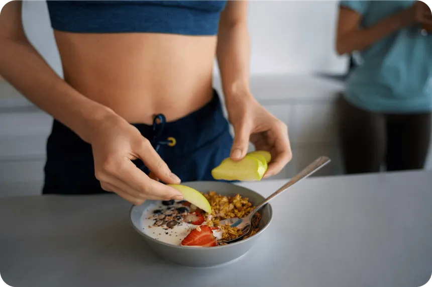

The Role of Nutrition in Triathlon
Triathlon training and racing place significant demands on your body. Meeting those demands with proper
nutrition is essential to support endurance, performance, and recovery.
- Muscles rely on glycogen (stored carbohydrates) and fat for sustained energy.
- Electrolytes such as sodium, potassium, and magnesium are lost through sweat and need replenishment.
- Dehydration can reduce endurance and impair mental focus.
- Muscle breakdown increases, especially during longer events or back-to-back training days.
Smart nutrition strategies help delay fatigue, maintain pacing, support recovery, and reduce injury risk.
Macronutrients: Fueling Your Performance
Carbohydrates
Function: The primary energy source for moderate to high-intensity activity. Stored
as glycogen in the muscles and liver.
Daily Needs: 5–10 grams per kilogram of body weight, depending on training load.
Examples: Oats, bananas, pasta, bread, rice, sports drinks.
Proteins
Function: Essential for muscle recovery and repair after exercise.
Daily Needs: 1.2–2.0 grams per kilogram of body weight.
Examples: Chicken, fish, eggs, tofu, lentils, Greek yogurt, protein shakes.
Fats
Function: Provide sustained energy during longer events and support hormone
production and brain function.
Daily Needs: 20–30% of total daily calories.
Examples: Avocados, nuts, seeds, olive oil, fatty fish like salmon.
Hydration: More Than Just Water
Even a 2% loss in body weight due to sweat can impair performance by up to
20%.
| Electrolyte |
Role in Performance |
Food Sources |
| Sodium |
Maintains fluid balance |
Salt, broth, sports drinks |
| Potassium |
Muscle function |
Bananas, potatoes, spinach |
| Magnesium |
Nervous system regulation |
Nuts, dark chocolate, leafy greens |
| Calcium |
Bone strength, muscle contraction |
Dairy, fortified plant milks |
Tips:
- Use sports drinks during workouts >60 minutes
- Add electrolyte tabs to water on hot days
- Monitor urine color – clear/yellow = hydrated
Micronutrients: The Hidden Power Players
| Nutrient |
Function |
Deficiency Symptoms |
| Iron |
Oxygen transport in blood |
Fatigue, poor recovery |
| Vitamin D |
Immune support, bone health |
Weakness, mood changes |
| B-Vitamins |
Energy metabolism |
Brain fog, tiredness |
| Magnesium |
Muscle relaxation, nerve function |
Cramps, insomnia |
Tip: Consider a multivitamin if diet is lacking, but aim to get most nutrients from
food.
Supplements for Triathletes
| Supplement |
Benefit |
Recommended Brand |
| Caffeine |
Boosts focus, delays fatigue |
GU Energy Gel, Clif Shot |
| Beta-Alanine |
Improves endurance, reduces fatigue |
NOW Sports, Optimum |
| Creatine |
Increases power output |
Thorne, Klean Athlete |
| Whey Protein |
Fast-absorbing muscle repair tool |
Myprotein, Orgain |
| Omega-3 |
Reduces inflammation |
Nordic Naturals, Garden of Life |
| Electrolyte Tabs |
Prevents cramping, maintains fluid balance |
Nuun, LMNT, SOSport |
Note: Always consult a doctor before starting any supplement regimen.
Pre-Race Nutrition (24–48 Hours Out)
- Focus on carb-loading
- Eat low-fiber meals to avoid GI issues
- Stay hydrated
Sample Meal Plan:
- Breakfast: Oatmeal + banana + honey
- Lunch: Pasta with tomato sauce + grilled chicken
- Dinner: White rice + baked potato + fish

Race Day Nutrition Strategy
| Phase |
What to Eat/Drink |
Timing |
| Morning of Race |
Small carb-rich breakfast |
Toast + jam + banana (2–3 hours out) |
| Swim Start |
Nothing until transition |
|
| Bike Leg |
Carb gels, water/soda |
Every 15–20 min |
| Run Leg |
Sports drink or water at aid stations |
Every 3–5 km |
| After Finish |
Recovery shake (whey + banana + oats) |
Within 30 min |
Recipes for Triathletes
Banana-Oatmeal Energy Bites (Pre-Workout)
Ingredients:
- 2 ripe bananas
- 1 cup oats
- 1 tbsp peanut butter
- 1 tsp cinnamon
Instructions:
- Mash bananas, mix with all ingredients.
- Roll into balls.
- Refrigerate for 1 hour.
Beetroot Juice (Performance Booster)
Benefits: Enhances oxygen efficiency, improves endurance
Recipe:
- 1 medium beetroot (peeled)
- 1 apple
- 1 carrot
- 1 orange (peeled)
- Blend and strain
Chicken Quinoa Bowl (Post-Training)
Ingredients:
- Grilled chicken breast
- Cooked quinoa
- Steamed broccoli
- Olive oil + lemon dressing
Tip: Add avocado for healthy fats
Psychological Effects of Nutrition
- Carbohydrates improve brain function and mood
- Omega-3s reduce anxiety and enhance focus
- Dehydration causes irritability, confusion, and lack of motivation
- Gut comfort impacts race-day confidence
A well-fed athlete is a confident athlete.
Popular Brands Among Triathletes
| Category |
Top Brands |
| Energy Gels |
GU, Clif, Hammer, Honey Stinger |
| Electrolytes |
Nuun, SOSport, LMNT, Skratch Labs |
| Protein Powders |
Myprotein, Vega, Optimum, Klean Athlete |
| Bars |
Clif Bar, RXBAR, Kind, Larabar |
| Hydration Packs |
CamelBak, Nathan, Osprey |
Final Thoughts
Nutrition is not one-size-fits-all. Experiment during training to find what works best for
you. Listen to your body, track your intake, and adjust based on performance, recovery,
and how you feel.
"You train hard, but you recover harder. And you recover through food."